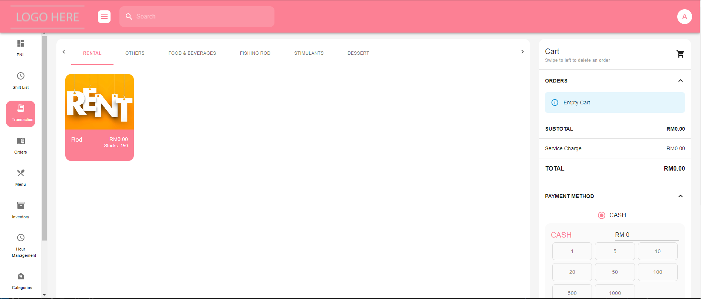

Operations / Web application01

Custom POS
React / MUI / FirebaseA clearer view of orders and transactions, built around the everyday realities of branch operations.
Behind the build
The problem. Operators needed a clearer way to track item orders and active transactions in a pawning workflow.
The approach. A focused React interface with structured transaction views and reusable UI components.
Next. Strengthen API integration, test coverage, and deployment documentation.
Visit live demo